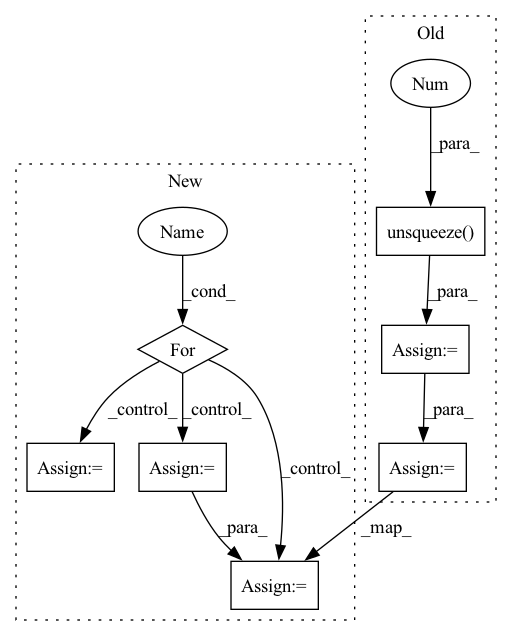

Pattern ID :11043

Before Change
// Image
t1 = time_sync()
im = cv2.cvtColor(cv2.imread(file), cv2.COLOR_BGR2RGB)
im = transforms(im).unsqueeze(0).to(device)
im = im.half() if model.fp16 else im.float()
t2 = time_sync()
dt[0] += t2 - t1
// Inference
results = model(im)
t3 = time_sync()
dt[1] += t3 - t2
p = F.softmax(results, dim=1) // probabilities
i = p.argsort(1, descending=True)[:, :5].squeeze() // top 5 indices
dt[2] += time_sync() - t3
LOGGER.info(f"image 1/1 {file}: {imgsz}x{imgsz} {", ".join(f"{model.names[j]} {p[0, j]:.2f}" for j in i.tolist())}")
After Change
model = DetectMultiBackend(weights, device=device, dnn=dnn, fp16=half)
model.warmup(imgsz=(1, 3, imgsz, imgsz)) // warmup
dataset = LoadImages(source, img_size=imgsz, transforms=classify_transforms(imgsz))
for path, im, im0s, vid_cap, s in dataset:
// Image
t1 = time_sync()
im = im.unsqueeze(0).to(device)
im = im.half() if model.fp16 else im.float()
t2 = time_sync()
dt[0] += t2 - t1
// Inference
results = model(im)
t3 = time_sync()
dt[1] += t3 - t2
// Post-process
p = F.softmax(results, dim=1) // probabilities
i = p.argsort(1, descending=True)[:, :5].squeeze().tolist() // top 5 indices
dt[2] += time_sync() - t3
// if save:
// imshow_cls(im, f=save_dir / Path(path).name, verbose=True)
seen += 1
LOGGER.info(f"{s}{imgsz}x{imgsz} {", ".join(f"{model.names[j]} {p[0, j]:.2f}" for j in i)}")
// Print results
In pattern: SUPERPATTERN
Frequency: 3
Non-data size: 7
Instances
Fragment ID: 38059428
Project Name: ultralytics/yolov5
Commit Name: 64e0757edffc6b2e927e16c8e2aa26439aceb4ce
Time: 2022-08-17
Author: ayush.chaurarsia@gmail.com
File Name: classify/predict.py
M Class Name: AnonimousClass
N Class Name: AnonimousClass
M Method Name: run(9)
N Method Name: run(10)
M Parent Class:
N Parent Class:
M File Name: classify/predict.py
N File Name: classify/predict.py
M Start Line: 38
M End Line: 82
N Start Line: 41
N End Line: 81
'>
Before Change
del pos_scores_threshold
// Computing False Acceptance Rate (false alarm)
negative_scores = torch.cat(
len(thresholds) * [negative_scores.unsqueeze(0)]
)
neg_scores_threshold = negative_scores.transpose(0, 1) > thresholds
FAR = (neg_scores_threshold.sum(0)).float() / negative_scores.shape[1]
del negative_scores
del neg_scores_threshold
After Change
final_FRR = 0
final_FAR = 0
for i, cur_thresh in enumerate(thresholds):
pos_scores_threshold = positive_scores <= cur_thresh
FRR = (pos_scores_threshold.sum(0)).float() / positive_scores.shape[0]
del pos_scores_threshold
neg_scores_threshold = negative_scores > cur_thresh
FAR = (neg_scores_threshold.sum(0)).float() / negative_scores.shape[0]
del neg_scores_threshold
// Finding the threshold for EER
'>
Fragment ID: 38059397
Project Name: speechbrain/speechbrain
Commit Name: f1fd2091d053c0c34e88b134495f9b791037b3dd
Time: 2022-06-23
Author: tplink312@gmail.com
File Name: speechbrain/utils/metric_stats.py
M Class Name: AnonimousClass
N Class Name: AnonimousClass
M Method Name: EER(2)
N Method Name: EER(2)
M Parent Class:
N Parent Class:
M File Name: speechbrain/utils/metric_stats.py
N File Name: speechbrain/utils/metric_stats.py
M Start Line: 477
M End Line: 505
N Start Line: 477
N End Line: 504
'>
Before Change
// Computing False Acceptance Rate (false alarm)
negative_scores = torch.cat(
len(thresholds) * [negative_scores.unsqueeze(0)]
)
neg_scores_threshold = negative_scores.transpose(0, 1) > thresholds
FAR = (neg_scores_threshold.sum(0)).float() / negative_scores.shape[1]
del negative_scores
del neg_scores_threshold
After Change
final_FRR = 0
final_FAR = 0
for i, cur_thresh in enumerate(thresholds):
pos_scores_threshold = positive_scores <= cur_thresh
FRR = (pos_scores_threshold.sum(0)).float() / positive_scores.shape[0]
del pos_scores_threshold
neg_scores_threshold = negative_scores > cur_thresh
FAR = (neg_scores_threshold.sum(0)).float() / negative_scores.shape[0]
del neg_scores_threshold
// Finding the threshold for EER
'>
Fragment ID: 38059366
Project Name: speechbrain/speechbrain
Commit Name: 84bca108f8c3739bc2f058bab7e43db32c46e090
Time: 2022-07-01
Author: dominik.wagner@th-nuernberg.de
File Name: speechbrain/utils/metric_stats.py
M Class Name: AnonimousClass
N Class Name: AnonimousClass
M Method Name: EER(2)
N Method Name: EER(2)
M Parent Class:
N Parent Class:
M File Name: speechbrain/utils/metric_stats.py
N File Name: speechbrain/utils/metric_stats.py
M Start Line: 477
M End Line: 505
N Start Line: 477
N End Line: 504